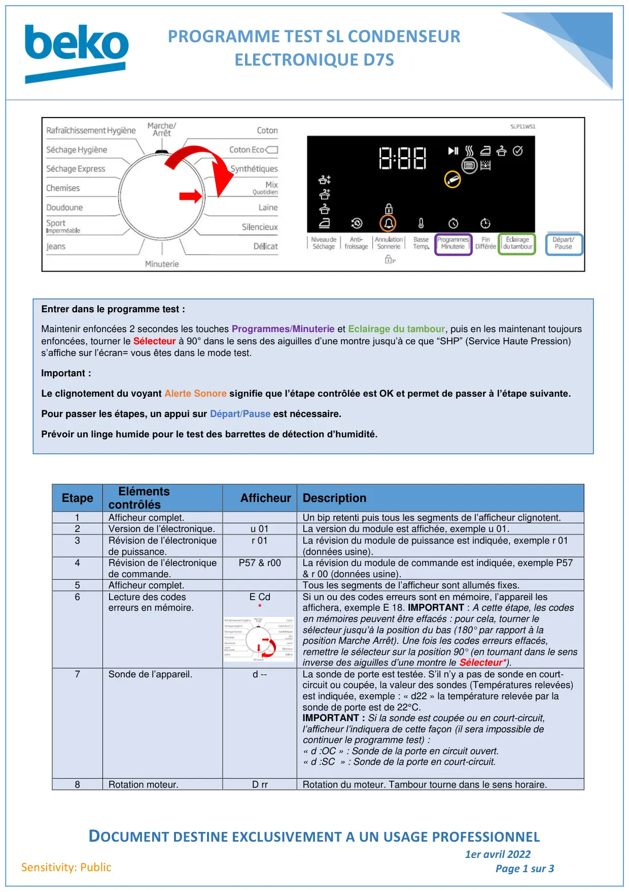
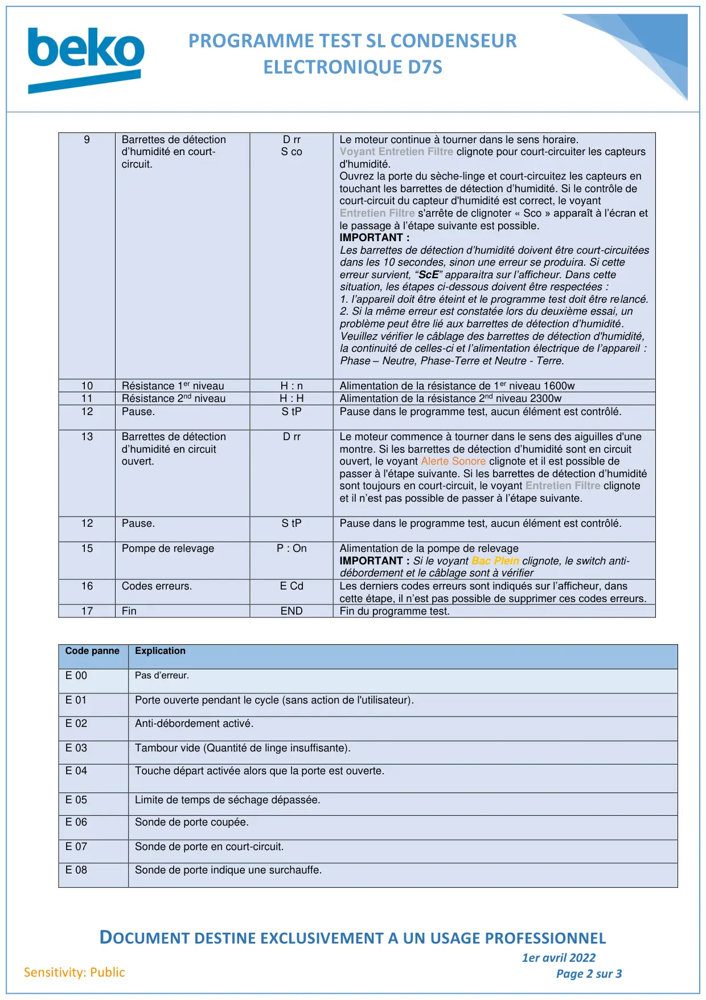
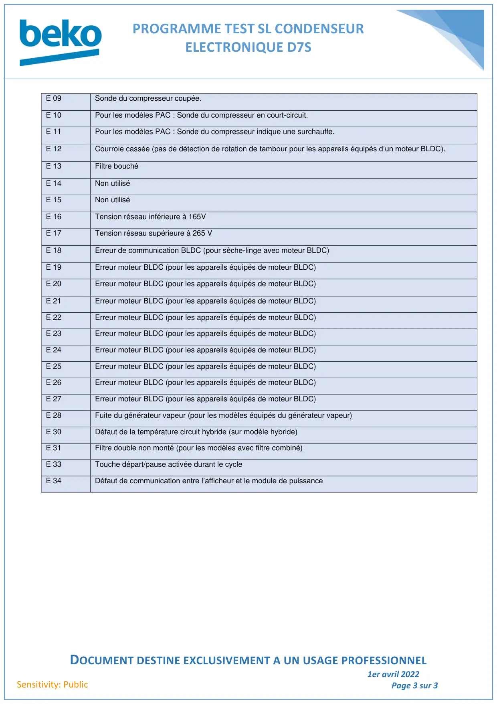

ProgTest seche linge Condenseur D7S

PROGRAMME TEST SL CONDENSEURELECTRONIQUE D7SDOCUMENT DESTINE EXCLUSIVEMENT A UN USAGE PROFESSIONNEL1er avril 2022Page 1 sur 3Sensitivity: PublicEtapeElémentscontrôlésAfficheur Description1Afficheur complet.Un bip retenti puis tous les segments de l’afficheur clignotent.2Version de l’électronique.u 01La version du module est affichée, exemple u 01.3Révision de l’électroniquede puissance.r 01La révision du module de puissance est indiquée, exemple r 01(données usine).4Révision de l’électroniquede commande.P57 & r00La révision du module de commande est indiquée, exemple P57& r 00 (données usine).5Afficheur complet.Tous les segments de l’afficheur sont allumés fixes.6Lecture des codeserreurs en mémoire.E Cd*Si un ou des codes erreurs sont en mémoire, l’appareil lesaffichera, exemple E 18. IMPORTANT : A cette étape, les codesen mémoires peuvent être effacés : pour cela, tourner lesélecteur jusqu’à la position du bas (180° par rapport à laposition Marche Arrêt). Une fois les codes erreurs effacés,remettre le sélecteur sur la position 90° (en tournant dans le sensinverse des aiguilles d’une montre le Sélecteur*).7Sonde de l’appareil.d --La sonde de porte est testée. S’il n’y a pas de sonde en court-circuit ou coupée, la valeur des sondes (Températures relevées)est indiquée, exemple : « d22 » la température relevée par lasonde de porte est de 22°C.IMPORTANT : Si la sonde est coupée ou en court-circuit,l’afficheur l’indiquera de cette façon (il sera impossible decontinuer le programme test) :« d :OC » : Sonde de la porte en circuit ouvert.« d :SC » : Sonde de la porte en court-circuit.8Rotation moteur.D rrRotation du moteur. Tambour tourne dans le sens horaire.Entrer dans le programme test :Maintenir enfoncées 2 secondes les touches Programmes/Minuterie et Eclairage du tambour, puis en les maintenant toujoursenfoncées, tourner le Sélecteur à 90° dans le sens des aiguilles d’une montre jusqu’à ce que “SHP” (Service Haute Pression)s’affiche sur l’écran= vous êtes dans le mode test.Important :Le clignotement du voyant Alerte Sonore signifie que l’étape contrôlée est OK et permet de passer à l’étape suivante.Pour passer les étapes, un appui sur Départ/Pause est nécessaire.Prévoir un linge humide pour le test des barrettes de détection d’humidité.
1 / 3
PROGRAMME TEST SL CONDENSEURELECTRONIQUE D7SDOCUMENT DESTINE EXCLUSIVEMENT A UN USAGE PROFESSIONNEL1er avril 2022Page 2 sur 3Sensitivity: Public9Barrettes de détectiond’humidité en court-circuit.D rrS coLe moteur continue à tourner dans le sens horaire.Voyant Entretien Filtre clignote pour court-circuiter les capteursd'humidité.Ouvrez la porte du sèche-linge et court-circuitez les capteurs entouchant les barrettes de détection d’humidité. Si le contrôle decourt-circuit du capteur d'humidité est correct, le voyantEntretien Filtre s'arrête de clignoter « Sco » apparaît à l’écran etle passage à l’étape suivante est possible.IMPORTANT :Les barrettes de détection d’humidité doivent être court-circuitéesdans les 10 secondes, sinon une erreur se produira. Si cetteerreur survient, “ScE” apparaitra sur l’afficheur. Dans cettesituation, les étapes ci-dessous doivent être respectées :1. l’appareil doit être éteint et le programme test doit être relancé.2. Si la même erreur est constatée lors du deuxième essai, unproblème peut être lié aux barrettes de détection d’humidité.Veuillez vérifier le câblage des barrettes de détection d'humidité,la continuité de celles-ci et l’alimentation électrique de l’appareil :Phase – Neutre, Phase-Terre et Neutre - Terre.10Résistance 1er niveauH : nAlimentation de la résistance de 1er niveau 1600w11Résistance 2nd niveauH : HAlimentation de la résistance 2nd niveau 2300w12Pause.S tPPause dans le programme test, aucun élément est contrôlé.13Barrettes de détectiond’humidité en circuitouvert.D rrLe moteur commence à tourner dans le sens des aiguilles d'unemontre. Si les barrettes de détection d’humidité sont en circuitouvert, le voyant Alerte Sonore clignote et il est possible depasser à l'étape suivante. Si les barrettes de détection d’humiditésont toujours en court-circuit, le voyant Entretien Filtre clignoteet il n’est pas possible de passer à l’étape suivante.12Pause.S tPPause dans le programme test, aucun élément est contrôlé.15Pompe de relevageP : OnAlimentation de la pompe de relevageIMPORTANT : Si le voyant Bac Plein clignote, le switch anti-débordement et le câblage sont à vérifier16Codes erreurs.E CdLes derniers codes erreurs sont indiqués sur l’afficheur, danscette étape, il n’est pas possible de supprimer ces codes erreurs.17FinENDFin du programme test.Code panneExplicationE 00Pas d’erreur.E 01Porte ouverte pendant le cycle (sans action de l'utilisateur).E 02Anti-débordement activé.E 03Tambour vide (Quantité de linge insuffisante).E 04Touche départ activée alors que la porte est ouverte.E 05Limite de temps de séchage dépassée.E 06Sonde de porte coupée.E 07Sonde de porte en court-circuit.E 08Sonde de porte indique une surchauffe.
2 / 3
PROGRAMME TEST SL CONDENSEURELECTRONIQUE D7SDOCUMENT DESTINE EXCLUSIVEMENT A UN USAGE PROFESSIONNEL1er avril 2022Page 3 sur 3Sensitivity: PublicE 09Sonde du compresseur coupée.E 10Pour les modèles PAC : Sonde du compresseur en court-circuit.E 11Pour les modèles PAC : Sonde du compresseur indique une surchauffe.E 12Courroie cassée (pas de détection de rotation de tambour pour les appareils équipés d’un moteur BLDC).E 13Filtre bouchéE 14Non utiliséE 15Non utiliséE 16Tension réseau inférieure à 165VE 17Tension réseau supérieure à 265 VE 18Erreur de communication BLDC (pour sèche-linge avec moteur BLDC)E 19Erreur moteur BLDC (pour les appareils équipés de moteur BLDC)E 20Erreur moteur BLDC (pour les appareils équipés de moteur BLDC)E 21Erreur moteur BLDC (pour les appareils équipés de moteur BLDC)E 22Erreur moteur BLDC (pour les appareils équipés de moteur BLDC)E 23Erreur moteur BLDC (pour les appareils équipés de moteur BLDC)E 24Erreur moteur BLDC (pour les appareils équipés de moteur BLDC)E 25Erreur moteur BLDC (pour les appareils équipés de moteur BLDC)E 26Erreur moteur BLDC (pour les appareils équipés de moteur BLDC)E 27Erreur moteur BLDC (pour les appareils équipés de moteur BLDC)E 28Fuite du générateur vapeur (pour les modèles équipés du générateur vapeur)E 30Défaut de la température circuit hybride (sur modèle hybride)E 31Filtre double non monté (pour les modèles avec filtre combiné)E 33Touche départ/pause activée durant le cycleE 34Défaut de communication entre l’afficheur et le module de puissance
3 / 3